Window
FCSを構成する各機能ウィンドウの役割と、それぞれの表示制御や操作方法について説明します。
{kind=link}
① Videos：
動画の読み込みや処理に関するウィンドウ
② Processor：
動画の複数処理に関する設定を行うウィンドウ
③ Controllers：
controller登録に関するウィンドウ
④ Profiles/Gallery：
登録済みのProfileに関するウィンドウ
⑤ Editor：Profile登録に関するウィンドウ
⑥ Solver：
出力の詳細設定に関するウィンドウ
⑦ Log：FCSのログを表示するウィンドウ
Videosウィンドウが開きます。
Videosウィンドウでは読み込んだHMC動画を一覧で表示します。
読み込んだ動画に対して、右クリックで開くメニューで個別の設定・処理が可能です。
{kind=link}
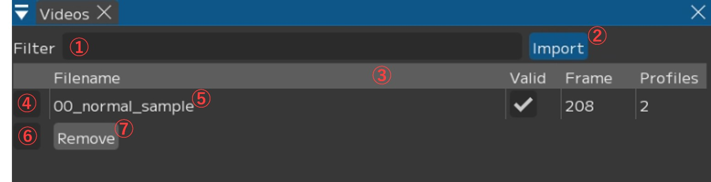
① Filter入力欄：動画名で絞り込み
② 【Import】：新しい動画のインポート
押すとダイアログが開き、動画を選択できます。
シフトキーで複数選択が可能です。
③ Video表見出し 右クリックメニューから表示する内容を変更可能です。
④ 選択ON/OFF：バッチ処理対象の切り替え
⑤ 動画名
右クリックでメニューが表示し、単体のアニメーション出力などを行うことができます。
※詳細は『videos/右クリックメニュー』をご確認ください。
⑥ 選択ON/OFF(全)：すべての動画に対して選択のON/OFFの切り替え
⑦ Removeボタン：「Remove Videos and Sequences」ウィンドウを表示
Videos 右クリックメニュー
{kind=link}
① 動画名
② 【Open】：動画を開く
PlayerとTimelineに表示されます。
③ 【Remove】：動画を削除
「Remove Videos and Sequence」ウィンドウを表示します。
④【▼ Process】：動画単体のアニメーション出力
⑤ ☑ Reproces：キャッシュが既に存在する場合も一から解析
※チェックなし→既存のキャッシュデータをそのまま使用し解析します。
基本的に ☑ を付けることをオススメします。
⑥ Upload Options：Mayaに出力したい項目に ☑
・☑ Animation：アニメーションデータ
・☑ Audio：音声データをMayaに読み込む
・☑ Frames：動画の連番画像を出力 ※Mayaのイメージプレーンに読み込みます
・☑ LM Frames：ランドマーク付の連番画像を生成
※Mayaのイメージプレーンに読み込みます
Warning
「LM Frames」は++パイプラインでは使用不可です。
また、「Frames」と「LM Frames」はどちらかのみに ☑ を入れてください。
両方に ☑ がある場合、「LM Frames」の画像は出力されません。
⑦ Export Options：出力したい項目に ☑
・☑ Playblast：プレイブラストをmov形式の動画で出力・保存
・☑ Scene：Mayaシーンを出力・保存
⑧ 【Start processing】：⑥・⑦の設定で処理を実行
⑨ 【▼ Copy】
・Filename：動画のファイル名をクリップボードにコピー
・Full path：動画のフルパスをクリップボードにコピー
・Parent：動画の親ディレクトリのパスをクリップボードにコピー
Remove Videos and Sequencesウィンドウ
このウィンドウでオプションを指定し、動画をFCSから削除します。

① Video：動画名
②Delete caches option：キャッシュデータについて
・ ☑ SetData：セットデータ内のファイル（音声・静止画連番）も削除するか
・ ☑ Tracking Sequence：動画のトラッキングデータも削除するか
・Profiles：削除対象の動画から追加したプロファイルについて
Keep → プロファイルはそのまま維持します。
Keep but unlink → プロファイルは維持しますが動画との関連は削除します。
（プロファイルの動画名がUnkownになります）
Delete → すべて削除します
③【Execute】：実行
④【Cancel】：キャンセル
Note
動画の尺変更などが原因で、同じ名前・違う内容の動画を読み込みたいとき、ProfilesをKeepにして該当の動画を削除＞動画を再読み込みすると、ピックアップしたフレーム位置にずれが発生し、想定していないアニメーション結果になる場合があります。
適宜DeleteやKeep but unlinkで以前の動画との連携を解除してください。
Processerウィンドウが開きます。
Processerウィンドウでは複数の動画を一括で処理するバッチ機能が使用できます。
VideosウィンドウでチェックボックスがONになっている動画が処理の対象になります。
{kind=link}
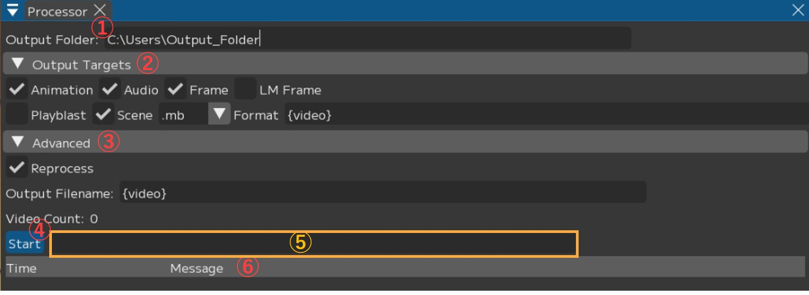
① Output Folder：出力先を指定
② Output Targets：出力する内容を指定
・☑ Animation：アニメーションデータを出力
・☑ Audio：音声データをMayaに読み込む
・☑ Frames：動画の連番画像を出力し、Mayaのイメージプレーンに読み込む
・☑ LM Frame：ランドマーク付の連番画像を生成し、Mayaのイメージプレーンに読み込む
※ “++パイプライン”では使用不可
・☑ Playblast：プレイブラストをmov形式の動画で出力し、保存
・☑ Scene：Mayaシーンを保存
・Format：出力するMayaの保存形式を指定(.mb / .ma)
③ Advanced：出力処理の詳細設定
・☑ Reprocess：キャッシュが既に存在する場合も一から解析する
・Output Filename：出力されるデータ名を指定
フォルダ名・動画名を指定するパラメータ
Note
Output Filenameを変更することで出力ファイル名に任意の名前を設定できます。
{solver} ： solverの名前
{video} ： ビデオのファイル名
{user} ： windows ユーザ名
{project} ： 案件フォルダ名
{chara} ： キャラクター名
{actor} ： 役者名
{%Y%m%d}, {%H%M%S} ： 年月日、時間分秒
{video}のみにするとimportした動画名で出力されます。
④ 【Start】：アニメーションの出力を開始
⑤ プログレスバー：処理状況の表示
⑥ Log：処理状況のログを表示
コントローラーの登録に関するウィンドウです。

① Filter：入力したコントローラー名で絞り込み
② 【all▼】：コントローラーの絞り込み
all / null / upper / lower / gaze / eyelid 指定した項目を絞り込んで表示します。
Note
Region名（upper / lower / gaze / eyelid）：
現在登録しているRegionのコントローラーが表示されます。
プルダウンがRegionの状態でAdd Selectedを押すと、
コントローラーをそのRegionに設定された状態で読み込むことができます。all：すべてのRegionのコントローラーが表示されます。
allの状態でコントローラーを読み込むとRegionにはnull(リージョン未設定)が設定されます。null：リージョンが設定されていないコントローラーが表示されます。
コントローラー表に一つでもnullがあると登録したコントローラーを保存できないため、
Save前にリージョンがnullになっているコントローラーがないか確認してください。
③ Maya/Add selected：Maya上で選択したコントローラーを登録
④ ☑ Sync：数値操作をMayaと連動させる
例：⑧min/max、⑨default などの数値操作
⑤ ☑ ：選択
⑥ コントローラー名：登録したコントローラー名一覧
右クリックで個別のメニューを表示します、詳細は下記「コントローラー名→右クリック」をご確認ください。
⑦ Region：各コントローラーの設定したRegionの表示や調整 【Region(画像ではupper) ▼】で個別にRegionを変更できます。
⑧ min/max：コントローラーの最小値・最大値の表示や調整
Note
最大値最小値は自動で入力されますが、値があまりにも大きすぎる場合は調整を行って下さい。
⑨ default：コントローラーのデフォルト値の表示や調整
⑩ 【▼Value】：☑ を入れたコントローラーの値を調整
・ ▼Min / Max / Default：どの数値を調整するか
・ 0.000：入力する数値
・ Apply：入力した数値をコントローラーに反映
⑪ 【▼Region】：☑ を入れたコントローラーにRegionを設定
upper / lower / gaze / eyelid
→ 押下したRegionに設定します。
⑫ Remove：☑ を入れたコントローラーを表から削除
⑬ 【Select All】：表示されているコントローラーすべてに ☑ を入れる ⑭ 【Unselect All】：表示されているコントローラーすべてからチェック □ を外す
⑮ 【▼Advanced】
・【Remove empty】：Regionが登録されていないコントローラー(null)を表から削除
・【Delete all】：登録したコントローラー情報をすべて削除
・【Reset】：直前に【Save】した状態に戻す
・【Rename】：「Replace controllers」ウィンドウを開く
※詳細については下記「複数コントローラーの一括リネーム」を参照ください。
・ ☑ Rearrange：コントローラー表の順番をドラッグ＆ドロップで変更できるようにする
⑯ 【save】：controllersの変更を保存しcontroller Infoに登録
コントローラー名→右クリック
一覧からコントローラー名を右クリックすることで、メニューが表示されます。
{kind=link}
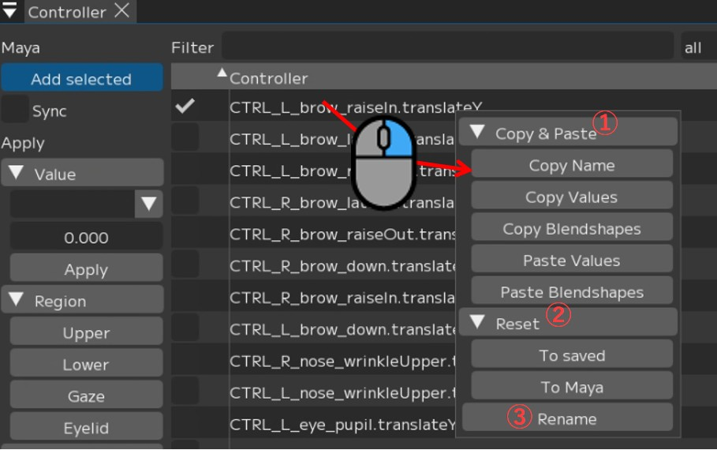
① 【▼Copy&Paste】
・【Copy Name】：コントローラー名をコピー
・【Copy Values】：数値操作をコピー
・【Copy Blendshapes】：ブレンドシェイプをコピー
・【Paste Values】：数値操作貼り付け
・【Paste Blendshapes】：ブレンドシェイプを貼り付け
② 【▼Reset】
・【To Save】：名前・数値などを【Save】時点に戻す
・【To Maya】：名前・数値などをMayaの設定に戻す
③ 【Rename】：コントローラー名の変更
「Rename controller」ウィンドウが開くので、「New Name」に変更したい名前を入れ、
【Rename】を押します。
複数コントローラーの一括リネーム
リネームしたいコントローラーに ☑ をいれ、【▼Advanced】→【Rename】を押します。
すると「Replace controllers」ウィンドウが開きます。
{kind=link}
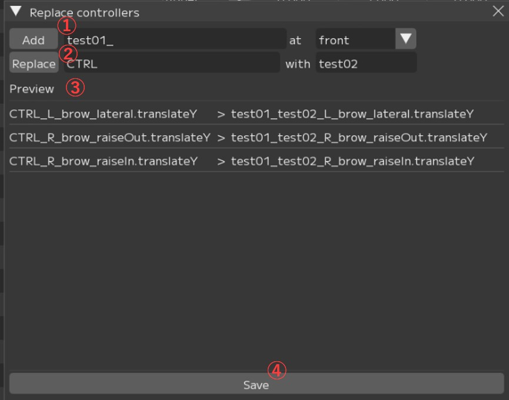
① 【Add】：コントローラー名に文字列を追加
【front ▼】（front/back）：コントローラー名の前後どちらに追加するかを指定します。
② 【Replace】：コントローラー名の指定の文字列を置き換え
→『変換前の文字列』with『変換後の文字列』 をそれぞれ入力します。
③ Preview：コントローラー名の変換前後のプレビュー
①・②それぞれ【Add】【Replace】を押すと、プレビューが表示されます。
④【Save】：リネームを反映
③のPreviewを確認し、問題なければ【Save】を押し反映させます。
Galleryは作成したProfileが一覧で表示されるウィンドウです。

① 【◀】【▶】：1列に表示するprofileの数を変更
【◀】：減らす・最小3 【▶】：増やす・最大10
② Count:○○：登録しているprofileの総数
③ profileのフィルター：該当する項目を絞り込む
・空白：すべてのprofileを表示
・Enabled：解析に使用するprofileを表示、Enabledに ☑ を入れて登録したprofileが対象
・Disabled：解析に使用しないprofileを表示、Enabledに ☑ を入れずに登録したprofileが対象
・Default：Neutralを含む、数値がdefaultのprofileを表示
・Not Default：数値がdefaultではないprofileを表示
・Neutral：Neutralにチェックを入れて登録したprofileを表示
・No Tags：タグを設定していないProfileを表示
・（Region）Enabled：該当する（Region）に ☑ を入れて登録したprofileを表示
・（Region）Disabled：該当する（Region）に ☑ を入れず登録したprofileを表示
④ ☑ Sync timeline：登録したprofileと同じ動画を開いた状態でprofileを選択すると、
該当するフレームに移動
⑤ ☑ Adbanced：詳細機能を表示 ※内容についてはページ下部項目をご参照ください。
⑥ 登録されたprofile一覧
プロファイルを追加した際の枠について
赤：数値がデフォルト状態/未編集のProfile
緑：「Neutral」に ☑ を入れて登録したProfile
青：選択中（編集中）のprofile
黒：「Enabled」の ☑ を外し、「Disabled」で登録したprofile
白：リターゲット後、登録したprofile
☑Adbancedについて
【▶ Filter】
より詳細に絞り込みを設定できます。

① Name：文字列が名前に含まれるProfileを表示
② Tag：タグ名をプルダウンから選択、該当のタグが付くProfileを表示
③ Video：動画名をプルダウンから選択、該当の動画からピックしたProfileを表示
④ Property：プルダウンから選択、該当するProfileを表示
※上記の③profileのフィルターと連動しています。
⑤ Upto：表示数を選択
⑥ 【Reset】：フィルターをリセット
【▶ Sort】
Profileの表示順を変更します。

① Order【▼】：ソートの昇順 降順を変更
② By property：ソートの内容を選択
・Video：動画の名前順にソート
・Created At：profileを作成した日時で順にソート
・Saved At：saveした日時で順にソート
・Name：profileのName順にソート
・Confidence：アルゴリズムとの一致度順（predict結果と近いもの）でソート
・Randomized：ランダムに表示
・（controller名）：該当する（controller）に登録した数値でソート
【▶ Batch Edit】
表示されているProfileに対し一括で使用・不使用（ON/OFF）の変更やTag付けができます。
{kind=link}
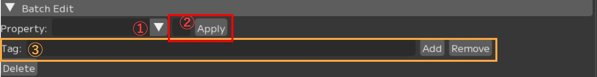
① Property：どの項目に対して設定を変更するかを指定
・Enabled：すべてのRegionに反映
・（各Region名）：そのRegionに反映
② ☑ 【Apply】：
・表示されているProfileを解析に使用する場合はチェックを入れる（☑）
・使用しない場合はチェックを外す（□）
③ Tag：表示されているProfileに対し一括でタグを設定する
・入力欄：Tagの名前を入力
・【Add】：タグを追加
・【Remove】：削除
【▶ Misc】
Galleryの表示形式などその他設定を変更できます。

① □ Hide Tooltip：登録されているRegionの図の表示 / 非表示を切り替え
② Display Mode：Profileの表示形式の変更
・Image：アクターの写真で表示
・Render：キャラクターモデルのスクリーンショットで表示
③【Refresh Renders】：Display Mode＞Render表示用にスクリーンショットを
現在のMayaの設定で再出力
プロファイルを登録するウィンドウです。
画像に対応する表情を、Mayaで作成しFCSに読み込み・FCSで作成しMayaに読み込みます。
{kind=link}
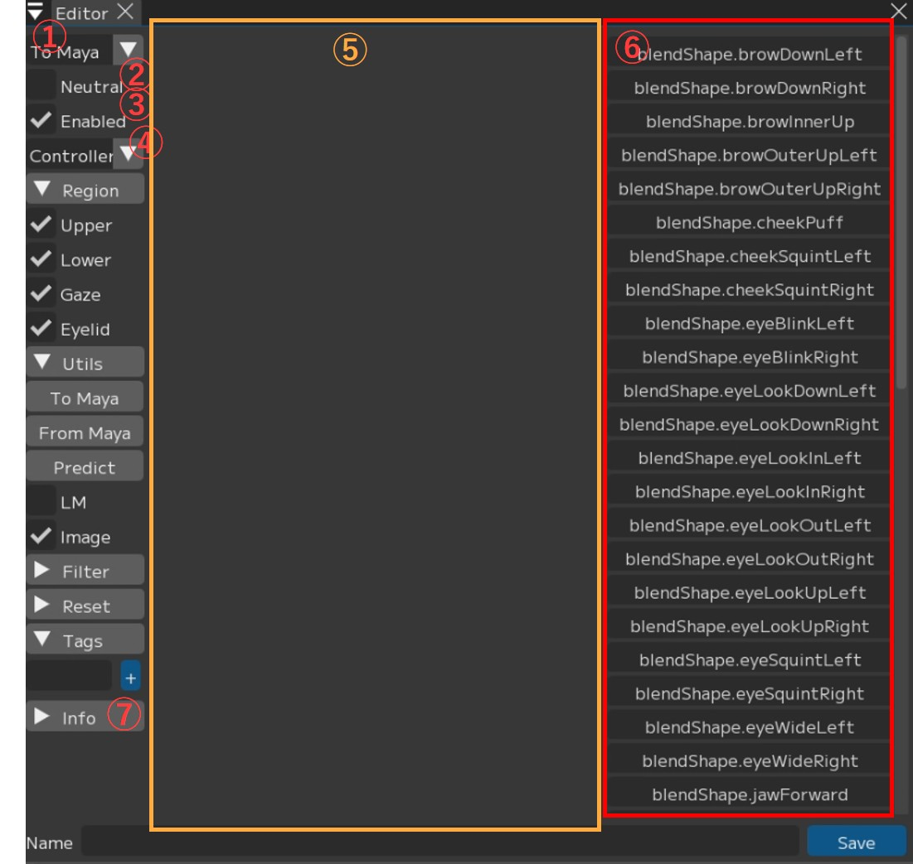
① To Maya▼：数値の操作をMayaと同期させるかどうかの設定
・To Maya：登録されているprofile情報をMayaに転送する
・From Maya at save：saveする際にMaya上での調整データを取得しFCSに反映する
・Both：FCSとMayaを双方向で連動させる
・No Sync：FCSとMayaを連動させない
② □ Neutral：Neutral表情かどうかを設定
デフォルトの表情として必ず1つ登録してください。
③ ☑ Enabled：このプロファイルを解析に含めるかどうかを設定
④ Controller▼：⑥のスライダー表記を切り替え
・Controller：コントローラー名で表示
・Value：コントローラー数値で表示
⑤ 選択したフレームの画像が表示される
⑥ スライダー：登録したcontrollerをスライダーとして表示
FCS上でMayaのcontrollerを調整できます
Note
コントローラーウィンドウ右部のスライダーはCtrl＋クリックで直接数値を入力することが可能です。
⑦ ▼Info：各情報を表示
【▼Region】

Upper/Eyelid/Gaze/Lower：
このプロファイルに
どのRegionの表情が含まれるか指定
【▼Utils】

① To Maya：
FCSで操作した値をMayaのコントローラーに送信
② From Maya：
Mayaで操作した値をFCSへ送る
③ Predict：
画像から表情を解析しMayaに反映する機能
④ □ LM：
LandMarkの表示を切り替え
⑤ ☑ Image：
プロファイルの画像を表示を切り替え
【▼Filter】
{kind=link}
① all ▼：
対応するRegionのコントローラーのみ表示
（Upper/ Lower / Gaze / Eyelid / all）
② 入力欄：
入力した文字でコントローラーを絞り込む
【▼Reset】
{kind=link}
Upper/Eyelid/Gaze/Lower/ALL：
対応するコントローラーの値を0にリセット
【▼Tags】

プロファイルにタグを追加
入力欄にタグ名を記入し、 【+】を押します。
動画のタイムラインの操作を行います。

① Timeline：バーを左右に動かし、ビデオを手動で再生
② [0][183]：ビデオの縮尺を変更、両サイドの〇をスライドさせることでも変更可能
③ [58]：現在のフレーム数
④ |< >|：1フレーム前/後に移動する
⑤ << >>：登録したprofile位置にジャンプ
⑥ ＞：動画の再生・停止（再生中は一時停止ボタンが表示されます）
⑦【+】：現在のフレーム位置でProfileを追加
⑧ Video：現在表示されている動画名
⑨ Profile：選択されているフレームでProfileが作成されていれば、そのProfile名
右クリックメニュー
タイムライン上を右クリックすると表示されるメニューです。

① 【▼Resolution】：表示している動画の解像度を変更
② 【▼Sync】：Mayaとの同期設定
・□ No Sync：
タイムラインをMayaと同期しない
・□ To Maya：
FCSのタイムラインの値を
Mayaのタイムスライダーへ送信
・□ From Maya：
Mayaのタイムスライダーの値を
FCSのタイムラインへ送信
※別途プラグインが必要になります。
・□ Both：
FCSとMayaのタイムラインを相互に同期
※別途プラグインが必要になります。
③ 【▼Speed】：再生に関する設定
・Every Frame：すべてのフレームを再生
・Real Time：リアルタイム再生
・□ Snap
・□ Loop：ループ再生
・□ Mute：音声をミュート
timelineのバー表示
左上の▲をクリックすると、timelineのバーが表示されます。
【Hide tab bar】を押すと逆にバーを非表示にできます。
{kind=link}
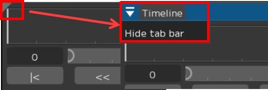
{kind=link}
アニメーション出力について、詳細設定を行うウィンドウです。
基本的にはデフォルト設定のまま使用できます。
{kind=link}
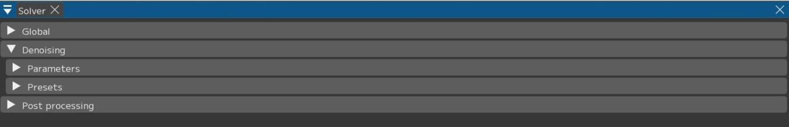
▼Global
{kind=link}
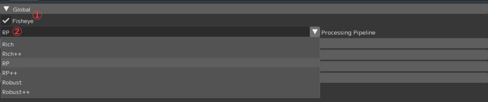
① ☑ Fisheye：魚眼レンズで撮影された動画の処理に最適化
広角レンズで撮影された動画を解析する際はチェックを外してください。
② Processing Pipeline：動画を処理するためのパイプラインを指定
Note
各パイプラインについてはテクニカルマニュアルをご参照ください。
▼Denoising
{kind=link}
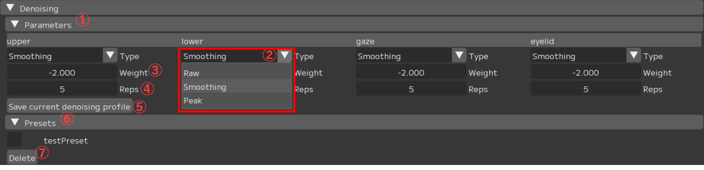
①【▼Parameters】：処理のパラメータ設定
② 【▼Type】：Smoothing機能の設定
・Raw：
・Smoothing：
・Peak：
③ Weight：強さを設定
④ Reps：回数を設定
⑤【Save current denoising profile】：現在の設定をプリセットとして保存
「Save Denoising preset」ウインドウが開きます。
プリセットの登録には「Preset name」を入力し【Save】します。
{kind=link}
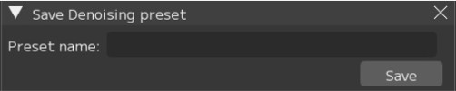
⑥【▼Preset】：登録したプリセットが表示される
⑦ 【Delete】：選択（☑）したプリセットを削除
▼Post processing
{kind=link}
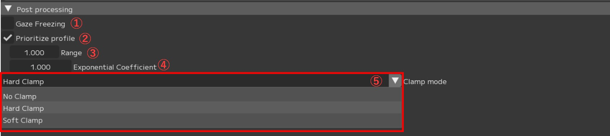
① ☐ Gaze Freezing：
② ☑ Prioritize profile：
Profileが登録されているフレームはProfileと全く同じ表情の値にして出力
解析の予測値よりもProfile登録時のリターゲットの値を優先します。
③ Range：Profileのフレームの前後合わせて指定の数秒スムージングをかける（単位：秒）
例：Range1.0の場合 → 前後0.5秒がスムージング対象
④ Exponential Coefficient：デフォルト値は1.0（線形）
値が小さいほどカーブが滑らかになります（その文解析の予測値から遠ざかります。）
⑤ Clamp mode：クランプ処理の設定を切り替え
・No Clamp：クランプ処理なし
・Hard Clamp：アニメーションカーブをControllerウィンドウで設定した 最大値 - 最小値で
クランプ （クランプされた範囲のスムージング処理なし）
・Soft Clamp：アニメーションカーブをControllerウィンドウで設定した最大値 - 最小値で
クランプ （クランプされた範囲のスムージング処理あり）
FCS上で表示されたログを確認できます。

① 【WARNING ▼】：表示するログの種類を選択
・INFO：インフォメーションログを表示
・WARNING：警告ログを表示
・ERROR：エラーログを表示
② Time：発生時刻
③ Logeer
④ Level：ログの種類 ※①を参照ください。
⑤ Message：ログの詳細・メッセージ内容
最新のログについては常にFCS下部に表示されます。
{kind=link}
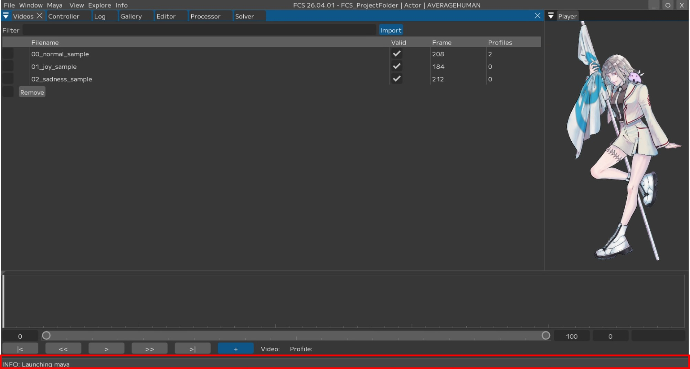
Menu説明 目次
〇File：Session(セッション)ファイルの管理と基本操作
〇Settings：File/Settings FCS全体の環境設定と動作オプション
〇Window：各種ウィンドウの表示・操作ガイド
〇Maya：Mayaの起動・連携
〇View：作業画面のレイアウト調整
〇Explore：FCSからWindowsエクスプローラーのファイル参照
〇Info：バージョン情報など